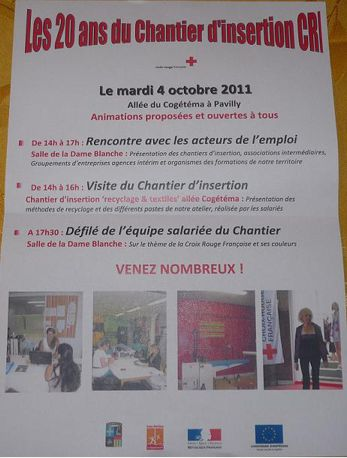
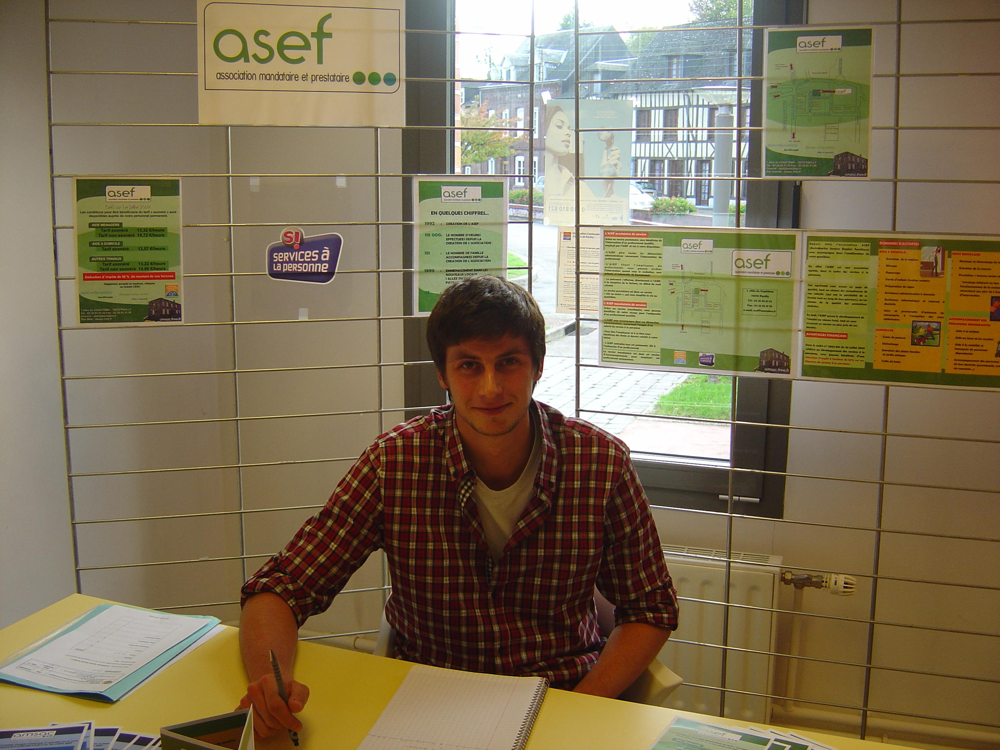
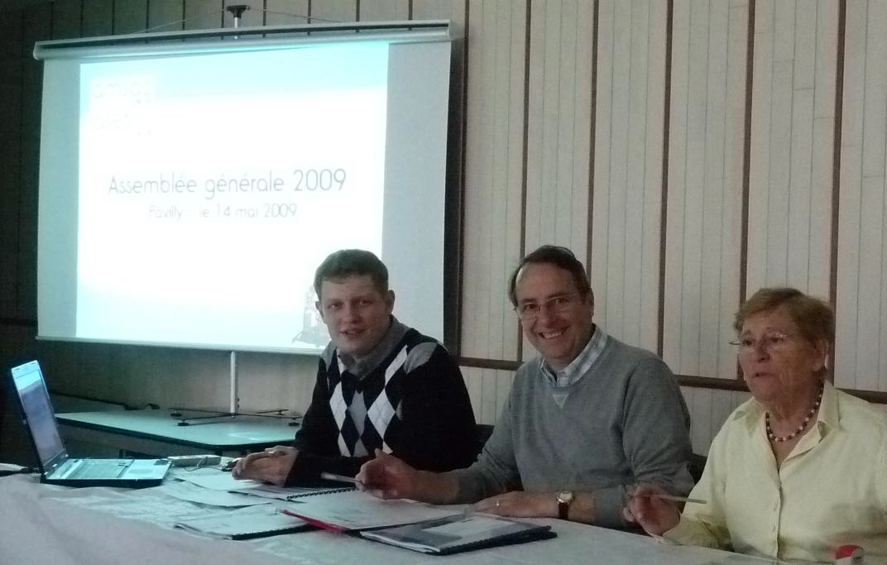

2011
L'AMSAC aux 20 ans du chantier d'insertion de la croix rouge
Venez nous retrouver aux Rencontres des acteurs de l'Emploi du secteur.

Jeudi 14 avril 2011
Assemblée Générale AMSAC-ASEF
L'Assemblée Générale de nos deux structures s'est déroulée le jeudi 14 avril 2011 dans la salle du CCAS de la Mairie de Pavilly..

2010
Assemblée Générale AMSAC-ASEF 2010
Pour l'année 2009, l'AMSAC a procuré 37 372.33 heures de travail à ses
inscrits.
Le nombre d'heures travaillées en 2009 pour l'ASEF s'élève à 9 407.75 heures
en mode mandataire et 525 heures en mode prestataire.
Il faut également souligner que les objectifs fixés par la convention signée avec la Direction du Travail ont été atteints sur l'année 2009.
Les projets présentés pour l'année 2010 concernent tout d'abord la mise en place de réunions d'information collectives sur le fonctionnement de l'AMSAC puis la refonte des statuts et du règlement intérieur des deux structures.
Le Conseil d'Administration accueille un nouveau membre, Mme Michèle DEMARES.
2009
L'ASEF au forum des services à la personne de Pavilly
Le 23 octobre 2009 était organisé dans le cadre de la Semaine bleue un forum des Services à la Personne à la "Maison pour Tous" de Pavilly.
L'ASEF, notre structure "Emplois Familiaux" y était représentée par Antoine GEULIN, nouveau chargé de développement de l'association.
Ce forum fut l'occasion de présenter le fonctionnement de l'ASEF ainsi que l'ensemble de nos domaines d'intervention.

Dans la presse ...
- Courrier Cauchois du 30/10/2009Assemblée Générale AMSAC-ASEF 2009
L'Assemblée Générale de nos deux structures s'est déroulée le jeudi 14 mai 2009 dans la salle du CCAS de la Mairie de Pavilly.
En préambule, le Président a rappelé les valeurs communes défendues par les associations intermédiaires du réseau COORACE. Ensuite, Les rapports moraux et financiers ont été présentés à l'Assemblée.

Pour l'année 2008, l'AMSAC a procuré 38966.30 heures de travail à ses inscrits. Le nombre d'heures travaillées en 2008 pour l'ASEF s'élève à 7934.75 heures en mode mandataire et 518.50 heures en mode prestataire.
Un point a été effectué sur les projets réalisés avec notamment l'aménagement des nouveaux locaux.
La réunion a également été l'occasion de remercier les salariés permanents et les administrateurs bénévoles pour le travail accompli.
Dans la presse ...
- Courrier Cauchois du 21/05/2009 - Paris-Normandie du 18/05/2009